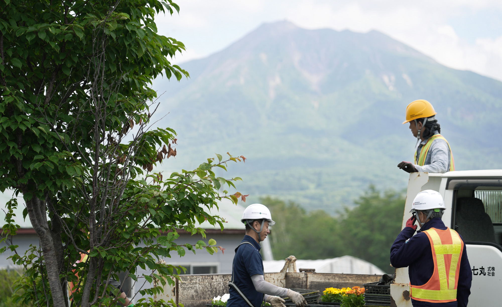
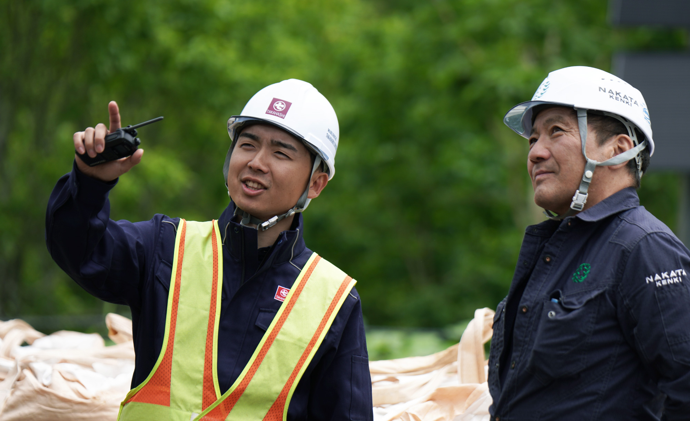
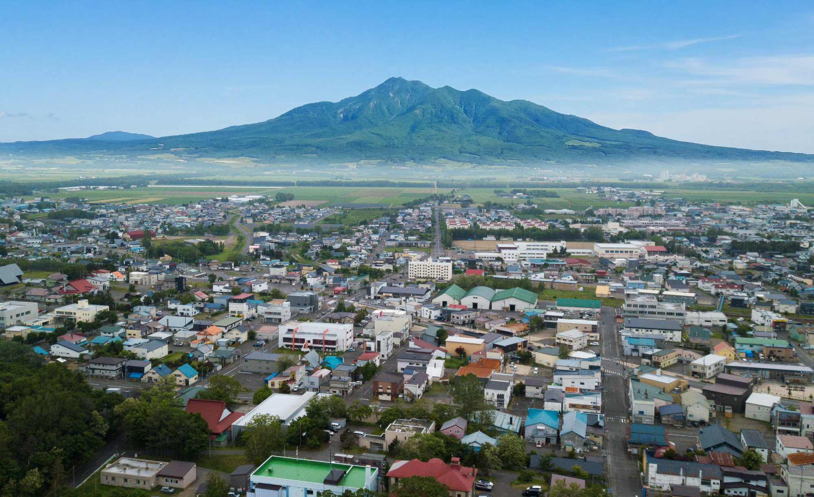

JOB LIST
求人募集
丸七高橋組では、
新卒・中途、経験者・未経験を問わず
スタッフを募集しています。
ワークライフバランスを
大切にした働き方
仕事にまっすぐ向き合いながら、知床・道東での暮らしも楽しめる環境へ。業務時間は無理のない範囲に抑え、休日はしっかりと。住環境の相談や資格取得のサポートなど、社員一人ひとりが安心して働き続けられる体制を整えています。

世界自然遺産・知床で
心地よく働く
世界自然遺産・知床の豊かな自然に囲まれながら、地域に必要とされる仕事に向き合う。四季の変化を身近に感じられる環境で、働く時間も、暮らす時間も、自分らしく大切にできる毎日があります。

Iターン・Uターン
移住サポート
知床・道東で新しい暮らしを始めたい方へ。Iターン・Uターンに伴う住まいや生活の不安にも寄り添い、安心して働き始められるようサポートします。地域に根ざした仕事と、自然に囲まれた暮らしを、ここから始めてみませんか。

募集要項
高校卒業：土木部
| 募集職種 | 土木部 |
|---|---|
| 業務内容 | 現場管理者のアシスト 事務作業 |
| 給与 |
月給 〔 200,000円 〕 住宅手当 〔 20,000円 〕（単身者：自宅以外の者） 残業手当 〔 22,335円 〕（例：月15時間残業の場合） 家族手当 〔 配偶者 5,000円、子 2,000円 〕（該当者） 資格手当 〔 1級〜20,000円、2級〜10,000円 〕（資格を取得した者） ※資格取得支援制度（会社負担）があります 現場手当 〔 10,000円 〕（資格を取得し現場担当の場合） 燃料手当 〔 支給あり 〕（年1回：11月） |
| 加入保険等 | 雇用保険、労災保険、健康保険、厚生年金、退職金共済、退職金制度（勤続3年以上） 定年制65歳、再雇用制度（70歳まで） |
| 就業時間 | 7:30〜16:30（休憩60分）8時間勤務 |
| 週休二日制 | 2026年度 所定労働日数／252日（休日113日）年間所定労働時間／2,016時間 ※ゴールデンウィーク、夏季休暇（お盆）、年末年始休暇あり、会社の年間就業カレンダーに準ずる |
| 有給休暇 | 入社6ヶ月経過後10日付与 |
| 勤務時間 | 8:00〜17:30（休憩120分）1日7時間30分勤務 |
| 賞与 | 夏季賞与1ヶ月分、冬季賞与2ヶ月分 |
高校卒業：建築部
| 募集職種 | 建築部 |
|---|---|
| 業務内容 | 現場管理者のアシスト 事務作業 |
| 給与 |
月給 〔 200,000円 〕 住宅手当 〔 20,000円 〕（単身者：自宅以外の者） 残業手当 〔 22,335円 〕（例：月15時間残業の場合） 家族手当 〔 配偶者 5,000円、子 2,000円 〕（該当者） 資格手当 〔 1級〜20,000円、2級〜10,000円 〕（資格を取得した者） ※資格取得支援制度（会社負担）があります 現場手当 〔 10,000円 〕（資格を取得し現場担当の場合） 燃料手当 〔 支給あり 〕（年1回：11月） |
| 加入保険等 | 雇用保険、労災保険、健康保険、厚生年金、退職金共済、退職金制度（勤続3年以上） 定年制65歳、再雇用制度（70歳まで） |
| 就業時間 | 8:00〜17:00（休憩60分）8時間勤務 |
| 週休二日制 | 2026年度 所定労働日数／252日（休日113日）年間所定労働時間／2,016時間 ※ゴールデンウィーク、夏季休暇（お盆）、年末年始休暇あり、会社の年間就業カレンダーに準ずる |
| 有給休暇 | 入社6ヶ月経過後10日付与 |
| 勤務時間 | 8:00〜17:30（休憩120分）1日7時間30分勤務 |
| 賞与 | 夏季賞与1ヶ月分、冬季賞与2ヶ月分 |
大卒等：土木部
| 募集職種 | 土木部 |
|---|---|
| 業務内容 | 公共工事をメインとした道路の維持補修 土木工事の施工管理業務全般 |
| 給与 |
月給 〔 270,000円 〕（大学院卒） 〔 250,000円 〕（大学卒） 〔 230,000円 〕（短大卒） 〔 240,000円 〕（高専卒） 〔 230,000円 〕（専修学校卒） 住宅手当 〔 20,000円 〕 残業手当 〔 22,335円 〕 家族手当 〔 配偶者 5,000円、子 2,000円 〕 資格手当 〔 1級〜20,000円、2級〜10,000円 〕 ※資格取得支援制度（会社負担）があります 現場手当 〔 10,000円 〕 燃料手当 〔 支給あり 〕（年1回：11月） |
| 加入保険等 | 雇用保険、労災保険、健康保険、厚生年金、退職金共済、退職金制度（勤続3年以上） 定年制65歳、再雇用制度（70歳まで） |
| 履修科目 | あれば可 専工学部（土木・建築関係） |
| 免許・資格等 | あれば可 ・普通自動車運転免許（AT限定可） 入社後の取得可 ・土木施工管理技士、建築施工管理技士、建設機械施工技士（全て1級か2級） |
| 就業時間 | 7:30〜16:30（休憩60分）8時間勤務 |
| 週休二日制 | 2026年度 所定労働日数／252日（休日113日）年間所定労働時間／2,016時間 |
| 有給休暇 | 入社6ヶ月経過後10日付与 |
| 賞与 | 夏季賞与1ヶ月分、冬季賞与2ヶ月分 |